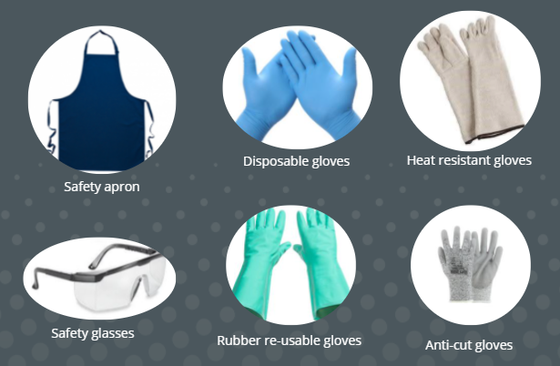
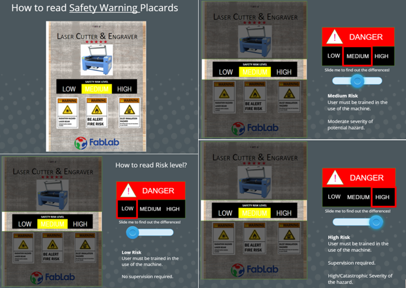

Introduction
Digital Fabrication Laboratories which is also known as Fab Lab is a place to create, innovate, invent and learn on advanced technology. Fab lab was founded by Professor Neil Gershenfeld of Massachusetts Institute of Technology (MIT). While technologies making almost everything possible, it is important to always priorites our safety. Therefore, FabLab safety is very important in keeping the environment safe.
Proper Attire for Users
- Long hair must be tied up
- No loose items allowed
- No long sleeves
- Hands free of adonments
- Long pants
- Covered shoes (anti slip if possible)
PPE available for loan in FabLab
Safety Warnings and Risk Levels
Good Housekeeping Practices
- Always return the tools back to their designated positions in the tool racks after use.
- Always keep the workplace neat and orderly after use.
- Always clear away the debris and chips off the machines or workbenches after use.
- Always bring unused or leftover materials to the recycle area.